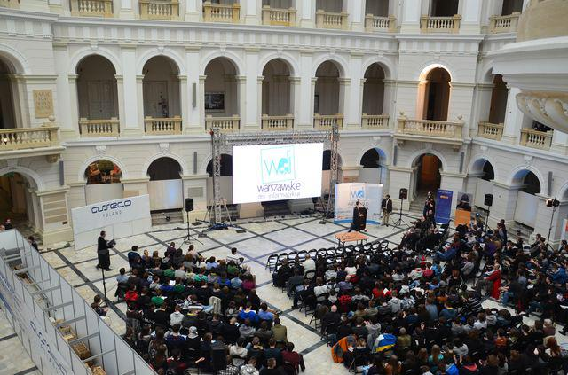

Wynalezienie drukuOficjalnie wynalezienie druku przypisuje się Janowi Gutenbergowi i datuje na rok 1450. Nie ulega jednak wątpliwości, że wynalazek ten miał ogromne znaczenie dla przemian kulturalnych, społecznych i politycznych w całej Europie. Wcześniej księgi były kopiowane ręcznie w klasztornych skryptoriach. Była to metoda droga, czasochłonna i niedoskonała. Do manuskryptów wdzierało się sporo błędów, czasem przez nieuwagę, czasem zaś kopiści celowo zmieniali treść, uważając ją na przykład za niemoralną. Książki były drogie, a więc dostępne tylko nielicznym. Ponadto, rozpowszechnienie jakiegoś dzieła wymagało lat. Druk wszystko uprościł. Cały proces stał się znacznie tańszy, pozwalał na wykonanie wielu idealnie wiernych kopii w krótkim czasie. Za sprawą druku i reformacji narodziły się nowożytne języki europejskie. Wynalazek Gutenberga miał też przełomowe znaczenie dla rozwoju edukacji. Drukowano podręczniki i rozprawy naukowe.Święto Latarni na TajwanieFestiwal Świateł – jedno z najbardziej kolorowych wydarzeń na świecie Święto Latarni na Tajwanie odbywa się w pierwszą pełnię księżyca Nowego Chińskiego Roku i oferuje wszystko od pokazów latarni elektrycznych i przedstawień ludowych, po bardziej tradycyjne wydarzenia takie jak festiwal Pingxi Sky Lantern. W Pingxi, małym miasteczku na zboczu wzgórza poza stolicą Tajpej, mieszkańcy wioski mieli w zwyczaju wypuszczać w niebo papierowe latarnie. Dziś, zarówno mieszkańcy, jak i goście kontynuują ten zwyczaj, który ma im przynieść szczęście w nowym roku.Warszawskie Dni InformatykiWarszawskie Dni Informatyki odbywające się co roku na Politechnice Warszawskiej to interesujące spotkanie nie tylko dla studentów. Znajdziemy tam bowiem prelekcje na wszystkich poziomach zaawansowania, prowadzone przez najlepszych trenerów IT w Polsce. Na uczestników wydarzenia czekają m.in.: Prezentacje o fuckupach z praktycznymi wskazówkami, co robić, aby ich uniknąć; Ponad 20 ścieżek tematycznych nawiązujące do głównych obszarów IT / data science; Solidna dawka wiedzy na temat najnowszych rozwiązań i technologii; Panele dyskusyjne, pozwalające poznać różne punkty widzenia; Odbywające się równolegle największe targi pracy IT w Polsce; Mazowsze – stypendia dla uczniów szkół zawodowychCelem projektu „Mazowsze – stypendia dla uczniów szkół zawodowych” jest wzrost efektywności i skuteczności w zakresie kształcenia zawodowego, tak, aby odpowiadało ono na potrzeby zmieniającego się rynku pracy. Uczniowie dzięki otrzymanemu stypendium będą mogli uczestniczyć w zajęciach pozaszkolnych, w tym w szkoleniach, kursach zawodowych, kursach przygotowawczych, kwalifikacyjnych i doskonalących oraz kursach językowych. Stypendyści będą mieli możliwość udziału w konferencjach, seminariach, obozach naukowych, wycieczkach edukacyjnych i innych wydarzeniach poszerzających wiedzę, rozwijających zdolności i umiejętności ucznia w zakresie kierunku rozwoju zawodowego. Dzięki realizowanemu projektowi na rynek pracy wejdą absolwenci szkół prowadzących kształcenie zawodowe z kompetencjami dostosowanymi do potrzeb rynku pracy. Realizacja projektu pomoże nie tylko uczniom, ale również przyczyni się do zmiany niekorzystnego wizerunku szkół prowadzących kształcenie zawodowe, stereotypowo odbieranych, jako szkoły dla uczniów z niskimi wynikami w nauce, na placówki atrakcyjne, dla ponadprzeciętnych uczniów ze sprecyzowanymi planami zawodowymi na przyszłość. |
|---|